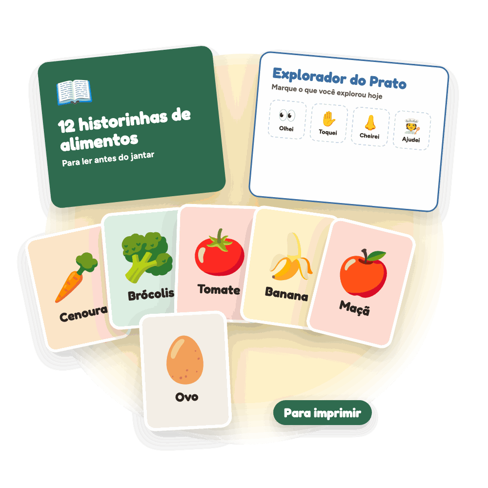

Falta um passo seu Prato Ponte já está garantido
Longe da mesa, a criança conhece os alimentos brincando
Na mesa, quem trabalha é a ponte. Fora dela, a criança pode ver, tocar e brincar com os alimentos sem ninguém pedir para provar.

Kit Pequeno Provador
Materiais para você imprimir e usar com a criança: historinhas, cartões, montagens de prato e a cartela Explorador do Prato.
- 12 historinhas curtas de alimentos para ler antes do jantar.
- 40 cartões de alimentos para brincar de memória, de feirinha e de cores.
- 12 montagens de prato divertido para fazer junto.
- Cartela “Explorador do Prato”: a criança marca o que explorou. Não é prêmio por comer.
Para quem é
Para quem quer um momento leve com a criança, longe da hora da refeição, e tem uma impressora em casa ou perto.
R$47
Pagamento único · Garantia de 7 dias
Se preferir não levar, toque em “Não, obrigada”. Seu Prato Ponte continua garantido e o acesso chega no seu e-mail.